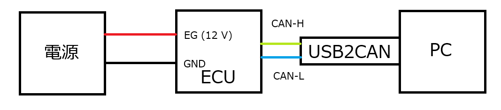

Can Hack: アクアのスピードメータ
はじめに
そういえばカーハッキングを実機でやったことないなと思い，やる． 大学院の入試も終わり，仕事もひと段落ついたのでここらへんで小さいプロジェクト的にやりたい． 新しいライブラリ触ってみた系とかちょっとやってみました系ばかりで（そういうのを継続することも目的のひとつだけど），ちょっとした目的をもって遊んでみる機会が減っているので，ここらへんでやってみようと思う
CAN Hack 系は座学はいくらでもリソースがあるが，実際に手を動かさないと何も学べない． と思っていたところにいい記事があった (ref: https://www.shutingrz.com/post/aqua-meter-hack/)
動かす
とりあえず先ほどの記事を手元で再現できるようにしたい． アクアのスピードメータはヤフオクで 3500 円くらい． ケーブル類の付属は無し．
あとは usb2can ケーブルが必要． 適当に動きそうなものを買った(https://amzn.asia/d/gGOBGAU)． 今回買ったのは seeedstudio のだが，これは SLCAN ではないので，can0 みたいなソケットはでない． なので，candump は使えない（はず）． python-can 少し使いづらかったのでちゃんと選んで買った方がよさそう
接続は下記．

ちなみにスピードメータのピンアサインはググったところで出てこないので，トヨタの CD を買う必要がある． あら～と思っていたらさっきのブログで必要な部分だけピンを教えてくれていたのでそれを参考にする．
あとついでに安定化電源もアリエクで 3000 円のを買ったが，電圧の下がり方が遅い． コンデンサの放電が遅いんだと思うけどそれにしても危ない． ちゃんとしたのを買った方がいい（それはそうか）
この接続で電源を起動すると ECU にランプがつく． 7 Vあたりで警告灯が点灯し，12 V あたりでそれ以外が点灯する． 警告灯だけ重要だから IG 電圧よりも低い電圧で起動するようになってるんかな． 起動時は結構デカい音が鳴る．
Fuzzing
先ほどのブログではファジングをやっていたのでとりあえずそこからやってみる．